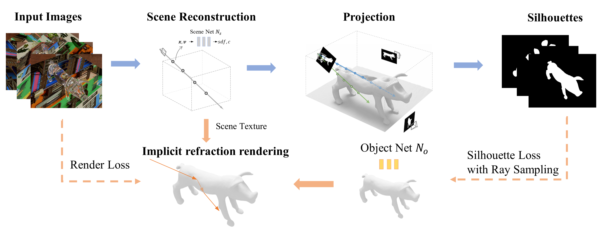

Abstract
Reconstructing the geometry of transparent objects has been a long-standing challenge. Existing methods rely on complex setups, such as manual annotation or darkroom conditions, to obtain object silhouettes and usually require controlled environments with designed patterns to infer ray-background correspondence. However, these intricate arrangements limit the practical application for common users. In this paper, we significantly simplify the setups and present a novel method that reconstructs transparent objects in unknown natural scenes without manual assistance. Our method incorporates two key technologies. Firstly, we introduce a volume rendering-based method that estimates object silhouettes by projecting the 3D neural field onto 2D images. This automated process yields highly accurate multi-view object silhouettes from images captured in natural scenes. Secondly, we propose transparent object optimization through differentiable refraction rendering with the neural SDF field, enabling us to optimize the refraction ray based on color rather than explicit ray-background correspondence. Additionally, our optimization includes a ray sampling method to supervise the object silhouette at a low computational cost. Extensive experiments and comparisons demonstrate that our method produces high-quality results while offering much more convenient setups.
Pipeline

The overview of our method. We first adopt neural volume rendering to recover the entire scene and estimate the object silhouettes by projecting the neural field back to input views. Then we reconstruct the object's shape which refracts the same color as input images through implicit refraction rendering. We also utilize estimated silhouettes to regularize the object's shape with our designed ray sampling method.
Capture Setup and Some Results

For a transparent object positioned on an arbitrary planar surface, our method solely relies on its multi-view RGB images as input to achieve high-precision geometry reconstruction. On the right side, we present the reconstructed shape and render it as a transparent object in a new environment.